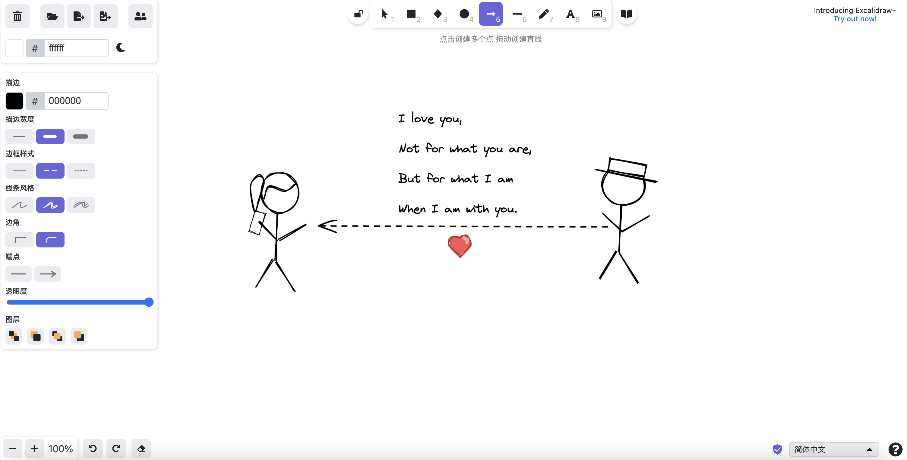
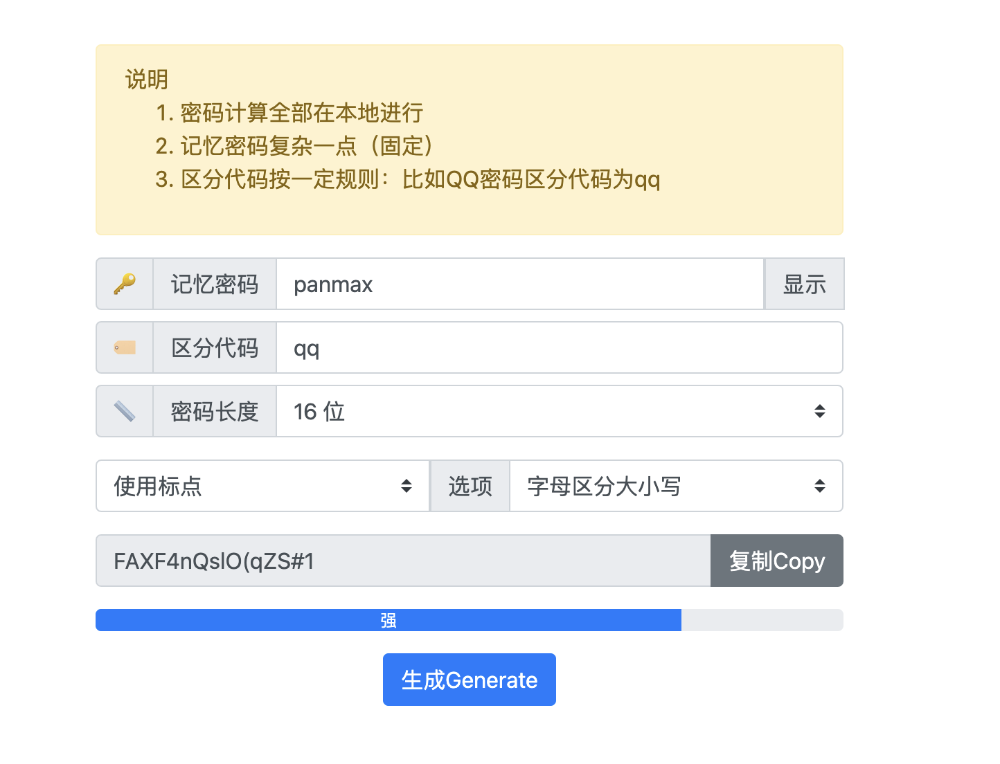
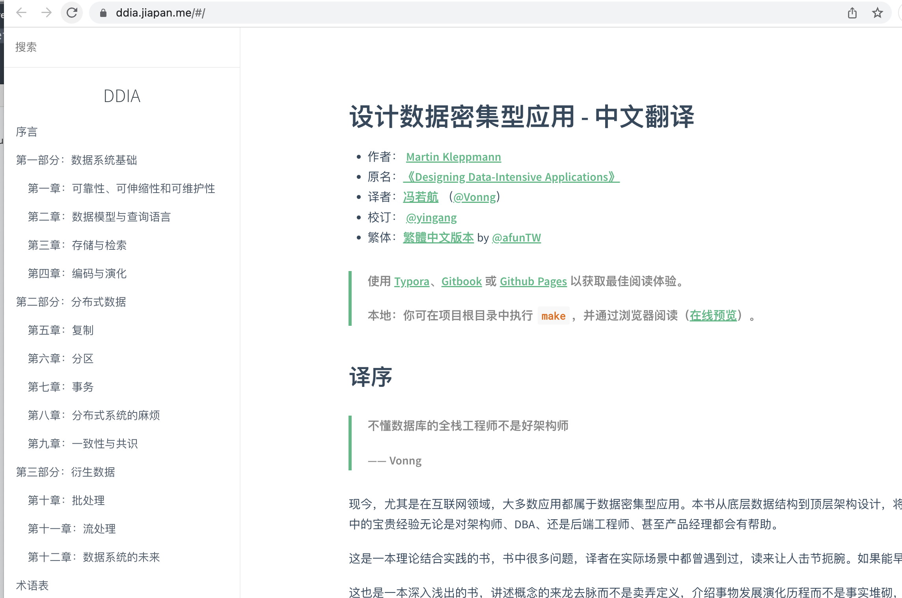

最近几天用 Cloudflare 的 Pages 部署了几个纯静态的网站，也就是完全不需要后端，只需要 HTML+JS+CSS 驱动的网站，发现静态站也很强大，再配上十分方便的 Cloudflare 域名托管，秒级搭建起一个网站并关联上自己的域名，同时支持 HTTPS 访问。
itty-bitty
匿名发布内容，不需要后端存储内容，而是把内容编码到 URL 上，比如打开这个链接 就可以看到我写的这段话了。

还可以给字体改颜色，加超链接、插入图片等富文本功能。
excalidraw
一个制作手绘图的网站，功能很强大，自己部署的纯静态版本除了不支持多人协作，其他功能都是完整的。
不支持登录，你绘制的内容保存在你的浏览器里，只要不清浏览器内容，下次访问内容不会丢失。

password-generator
给一个你常用、好记的密码，并填写一个区分场景，这个工具会帮你转成一个强度很高的密码，每次你在输入密码时可以来这里转换出你的密码。
比如下图中，我生成了一个用于 QQ 登录的密码，下次登录 QQ 时来这里查我的密码是什么就可以了。密码是纯前端生成的，没有任何后端逻辑。

ddia
ddia 那本书中文翻译的开源版本，没什么用，放在自己域名下就是好玩🤗。

Blog
最后我索性把自己当前这个博客也托管到了 Cloudflare 的 Pages，之前是把静态页放在一个海外的服务器上，前边用 Cloudflare 的 DNS 做一次代理，现在一身轻松了。
以上这些我都是让 Cloudflare Pages 关联了我 GitHub 上的 Repo，当那些 Repo 有更新这些网站也会跟着自动更新，对应的 Repo 分别是：
- https://github.com/Panmax/itty-bitty
- https://github.com/Panmax/excalidraw
- https://github.com/Panmax/password-generator
- https://github.com/Panmax/ddia
- https://github.com/Panmax/Panmax.github.io